Setting up Care Compass: step by step
This guide shows you how to put Care Compass online under your own accounts. You do not need any technical knowledge. Every step says where to click and what you should see. Take your time: the whole job takes about one hour.
If you get stuck: stop, write down the step number and what the screen says, and contact the Care Compass team. Nothing in this guide can delete your data by accident.
What you will do
- Create a GitHub account (where the program lives).
- Make your own copy of the Care Compass program (this is called a "fork").
- Create a Supabase account (where the information is stored) and a project.
- Copy a few codes from Supabase into the table in this guide.
- Give GitHub those codes.
- Press one button in GitHub to build the database.
- Create a Vercel account (it puts the website on the internet) and publish the website.
- Change two settings in Supabase so that sign-up and password reset work.
Your checklist
Tick each box on paper as you finish it.
- GitHub account created (Step 1)
- Care Compass copied to my GitHub account (Step 2)
- Supabase account created (Step 3)
- Supabase project created, database password saved (Step 4)
- Five codes copied into the table (Step 5)
- Three secrets added in GitHub (Step 6)
- Migrate database finished with a green tick (Step 7)
- Website published on Vercel, web address saved (Step 8)
- Email confirmation switched off, website address added in Supabase (Step 9)
- Reset and invite emails changed (Step 10)
- Test sign-up worked (Step 11)
Words you will see
| Word | What it means |
|---|---|
| Account | Your own login with a company, made with your email and a password. |
| Fork | Your own copy of the program, kept in your own GitHub account. |
| Database | Where Care Compass stores its information (people, carers, schedules, budgets). |
| Key or code | A long password that lets one company's tool talk to another. Treat it like a bank password. |
| Copy and paste | Click and drag to highlight text, press Ctrl and C (Mac: Command and C) to copy it, then click where it should go and press Ctrl and V (Mac: Command and V). |
Before you start
- An email address that you can read, and that you will keep for these accounts.
- About one hour, a computer and a web browser such as Chrome or Safari.
- A place to keep your codes private, for example a notebook kept somewhere safe.
Your codes table
As you go through the steps you will collect the codes below. Copy each one into the last column when a step tells you to. The last column starts empty.
| Name | What it is | Where you find it | Paste your code here |
|---|---|---|---|
SUPABASE_PROJECT_REF | The short name of your Supabase project | Step 5 | |
SUPABASE_DB_PASSWORD | The database password you choose | Step 4 | |
SUPABASE_ACCESS_TOKEN | A code that lets GitHub use your Supabase | Step 5 | |
NEXT_PUBLIC_SUPABASE_URL | The web address of your Supabase project | Step 5 | |
NEXT_PUBLIC_SUPABASE_ANON_KEY | The "anon" key (a public key) | Step 5 | |
SUPABASE_SERVICE_ROLE_KEY | The "service_role" key (a private key: tell nobody) | Step 5 | |
DATA_SOURCE | Tells Care Compass to use your database. It is always the same word. | Already filled in | supabase |
| Your Vercel web address | The address of your finished website | Step 8 |
Step 1: Create a GitHub account
- Open github.com in your browser.
- Click Sign up (top right).
- Type your email, choose a password and a username, then follow the instructions on screen.
- GitHub emails you a code. Type it in to finish.
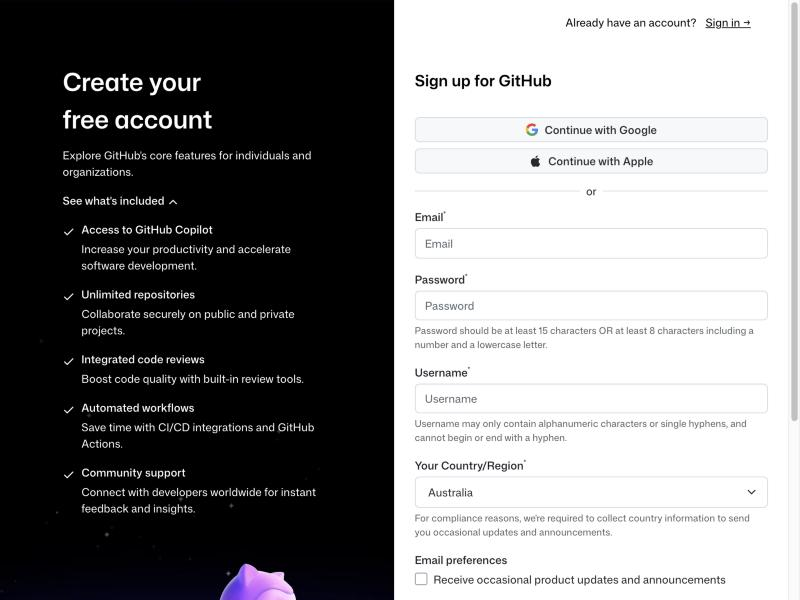
Step 2: Make your own copy of Care Compass (fork)
- Open the Care Compass repository on GitHub: https://github.com/MrThief123/care-compass. Make sure you are signed in to your own GitHub account.
- Click the Fork button near the top right.
- Leave the settings as they are and click the green Create fork button.
- Wait a moment. You now have your own copy. The address at the top of the browser now has your username in it.
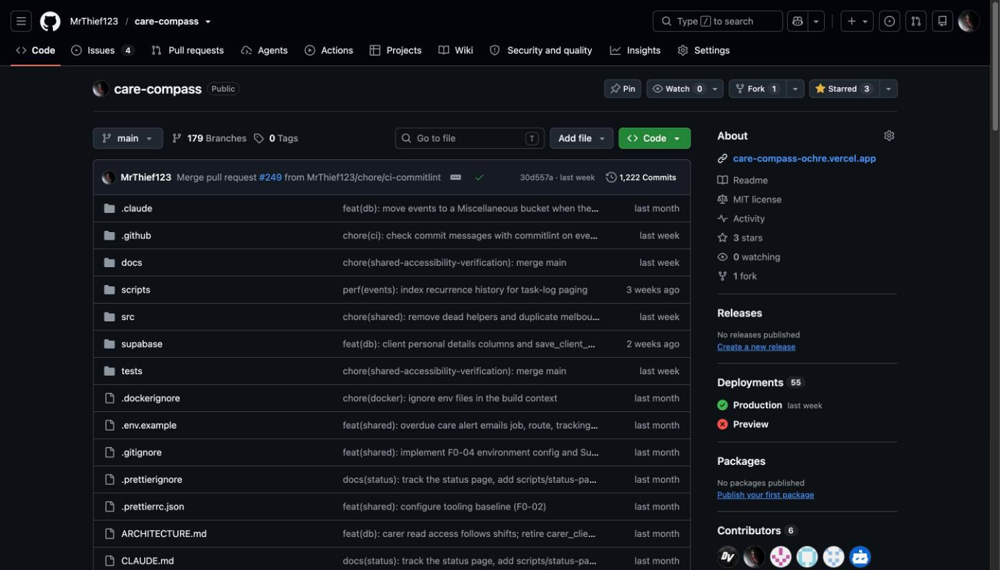
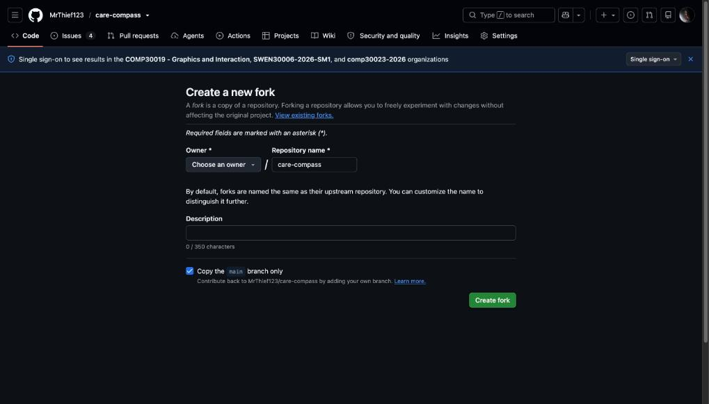
Step 3: Create a Supabase account
- Open supabase.com.
- Click Start your project.
- Click Continue with GitHub. This uses the GitHub account you just made, so there is no new password to remember.
- If GitHub asks you to allow Supabase, click Authorize.
- If Supabase asks you to create an organisation, type your business name and continue.
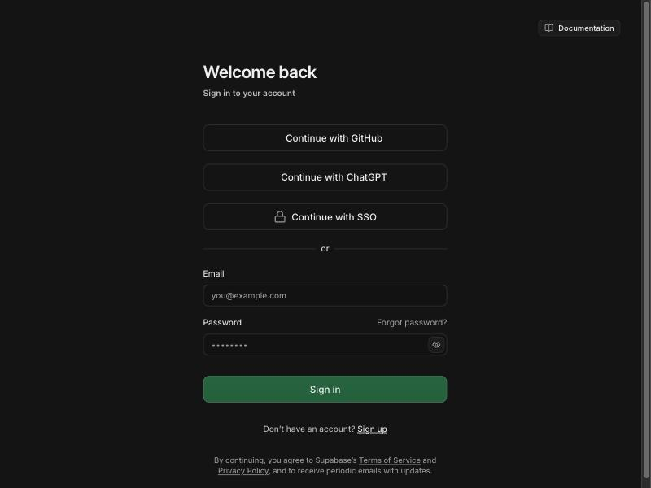
Step 4: Create your Supabase project
- Click New project.
- Name: type
care-compass. - Database password: click Generate a password, then copy it. Paste it into the table above, in the row SUPABASE_DB_PASSWORD, straight away. You cannot see it again later.
- Region: choose the one closest to you. For Australia, choose Sydney.
- Click Create new project. Wait a few minutes until the project is ready.
Step 5: Copy your codes from Supabase
You will collect five codes. Open your project in Supabase, then:
5a. The project reference
- Look at the address in your browser. It looks like
supabase.com/dashboard/project/abcdefghijklmnopqrst. - The letters after
/project/are your project reference. Copy them into the table, row SUPABASE_PROJECT_REF.
5b. The web address and the two keys
- On the left, click the gear icon (Project Settings), then click API Keys (or API).
- Copy the Project URL into the table, row NEXT_PUBLIC_SUPABASE_URL. It ends in
.supabase.co. - Find the key called anon (also called public). Click Copy and paste it into the row NEXT_PUBLIC_SUPABASE_ANON_KEY.
- Find the key called service_role (also called secret). Click Reveal, then Copy, and paste it into the row SUPABASE_SERVICE_ROLE_KEY.
If you only see keys named "publishable" and "secret", click the tab called Legacy API Keys. The anon and service_role keys are there.
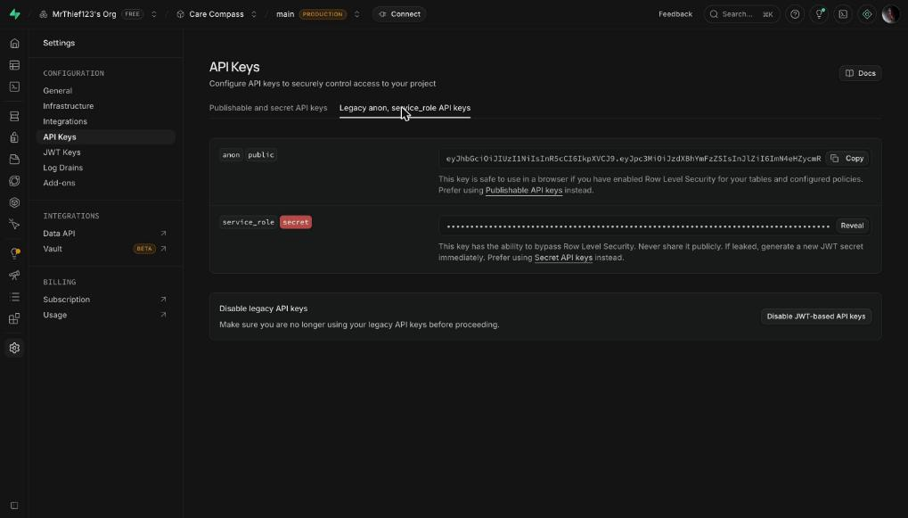
5c. The access token
- Click your profile picture (bottom left or top right), then Account preferences, then Access Tokens.
- Click Generate new token. Name it
githuband click Generate token. - Copy the token straight away and paste it into the row SUPABASE_ACCESS_TOKEN. It is shown only once.
Step 6: Give GitHub three of the codes
This lets GitHub build your database in the next step.
- Open your copy of Care Compass on GitHub (the one with your username in the address).
- Click the Settings tab in the row of tabs near the top.
- On the left, click Secrets and variables, then Actions.
- Click the green New repository secret button.
- In Name, type exactly
SUPABASE_ACCESS_TOKEN. In Secret, paste your access token from the table. Click Add secret. - Repeat for
SUPABASE_DB_PASSWORD(paste the database password) andSUPABASE_PROJECT_REF(paste the project reference).
You should now see three secrets in the list. GitHub never shows their values again. If you make a mistake, add a secret with the same name and it replaces the old one.
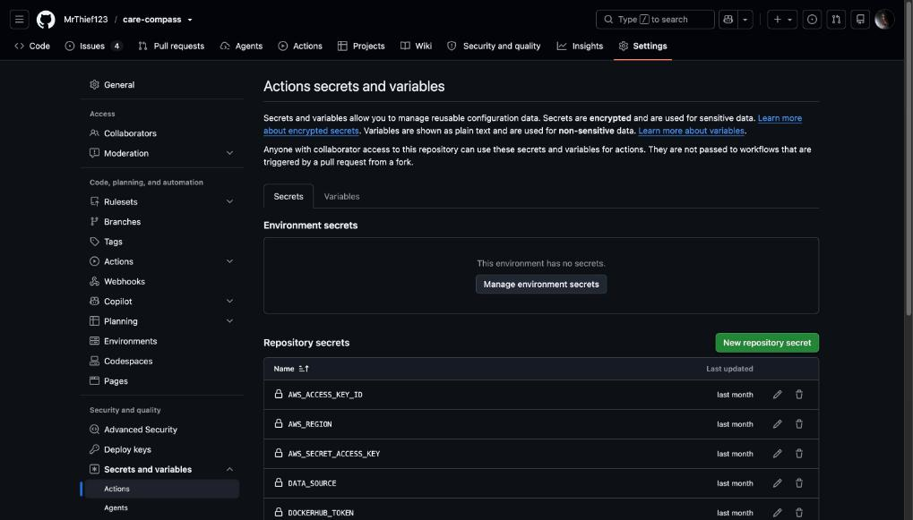
Your list will be shorter: it shows only the secrets you add.
Step 7: Build the database
- In your copy on GitHub, click the Actions tab.
- If you see a message that workflows are disabled, click the green button that says I understand my workflows, go ahead and enable them.
- On the left, click Migrate database.
- On the right, click Run workflow. Leave the branch as main.
- First, a safe test: tick the box Only list the migrations that would be applied, then click the green Run workflow button. Wait about a minute and refresh the page. A green tick means all is well. This test changes nothing.
- Now the real run: click Run workflow again, leave the box not ticked, and click the green button. Wait for the green tick.
- To check, open Supabase, click Table Editor on the left. You should see a list of tables such as
profilesandclients.
If you see a red cross: click the run, then the step with the red cross, and read the message. A message about "missing secrets" means Step 6 is not finished. A message about a "password" means the database password was copied wrongly: add the SUPABASE_DB_PASSWORD secret again. Then run it again. Running it twice is safe.
1. Click Run workflow. This box opens:
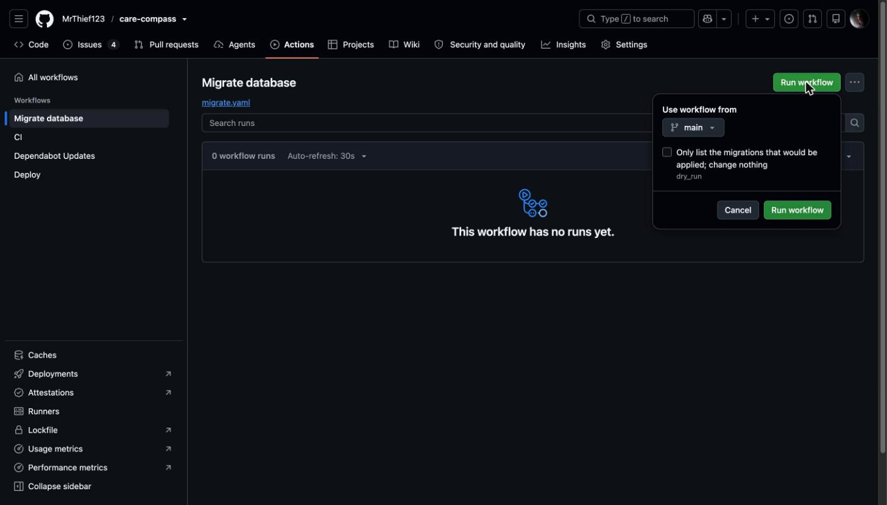
2. For the safe test, tick the box, then click the green Run workflow button in the box:
Watch the whole thing: this short animation shows both runs, from opening the box to ticking it and pressing the green button.
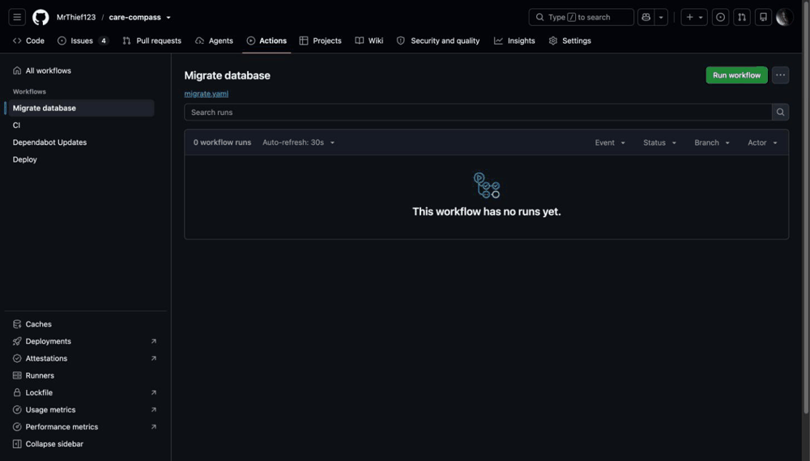
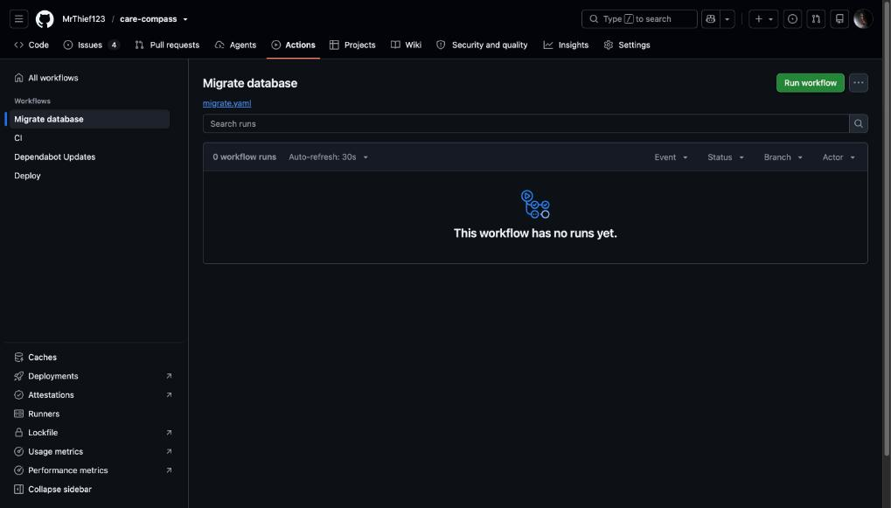
When the database is built, the Table Editor in Supabase lists the tables:
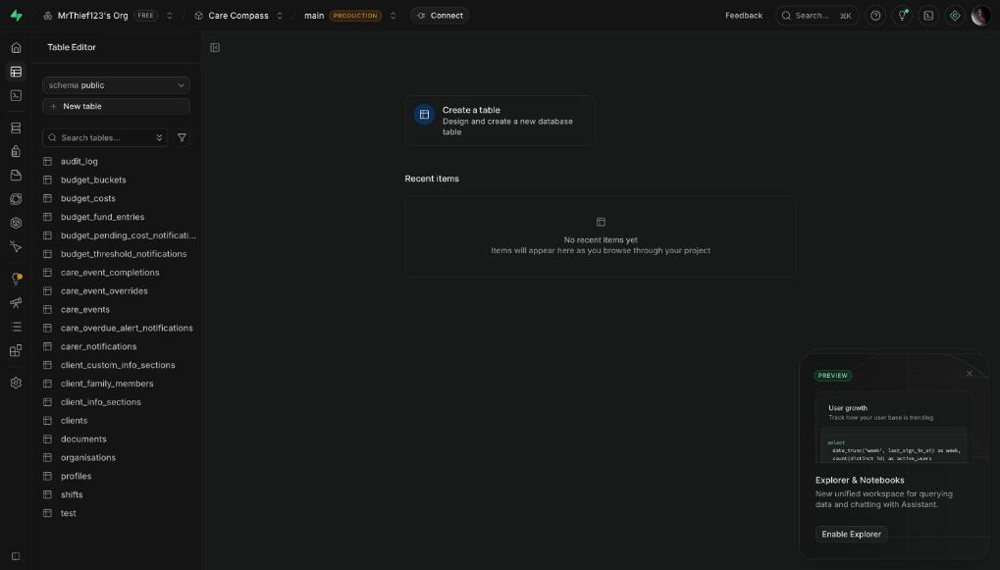
Step 8: Put the website online with Vercel
- Open vercel.com and click Sign Up.
- Choose the free Hobby plan, type your name, and click Continue with GitHub.
- Click Add New, then Project.
- Find your copy of Care Compass in the list and click Import. If it is not in the list, click Adjust GitHub App Permissions and allow access to your copy.
- Leave all the settings as they are. It should say Next.js.
- Click Environment Variables to open that section. Add four, one at a time. Type the Name exactly as shown, paste the value from your table, and click Add:
NEXT_PUBLIC_SUPABASE_URLNEXT_PUBLIC_SUPABASE_ANON_KEYSUPABASE_SERVICE_ROLE_KEYDATA_SOURCEwith the valuesupabase
- Click Deploy. Wait a few minutes until you see a success page.
- Click the picture of your website, or Continue to Dashboard. Copy the web address of your new site (it ends in
.vercel.app) into the last row of your table.
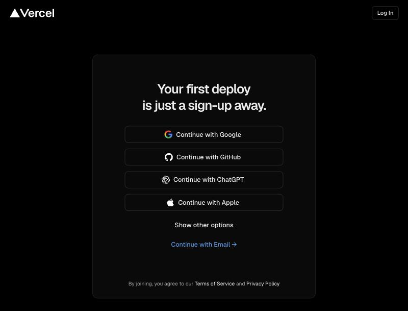
Step 9: Two settings in Supabase
Go back to Supabase and open your project.
9a. Turn off email confirmation
- On the left, click Authentication.
- Click Sign In / Providers, then click Email.
- Switch Confirm email off (the switch turns grey).
- Click Save.
If you skip this, nobody can create an account. The page says "We couldn't create your account".
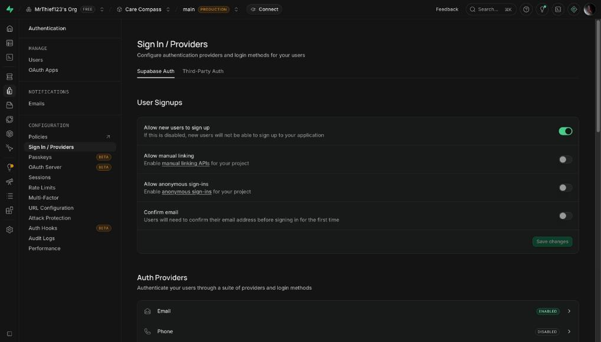
9b. Tell Supabase your website address
- Click Authentication, then URL Configuration.
- In Site URL, paste your Vercel web address from the table. It must start with
https://and have nothing after.vercel.app. - Under Redirect URLs, click Add URL, paste the same address and type
/**straight after it. For example:https://your-site.vercel.app/** - Click Save.
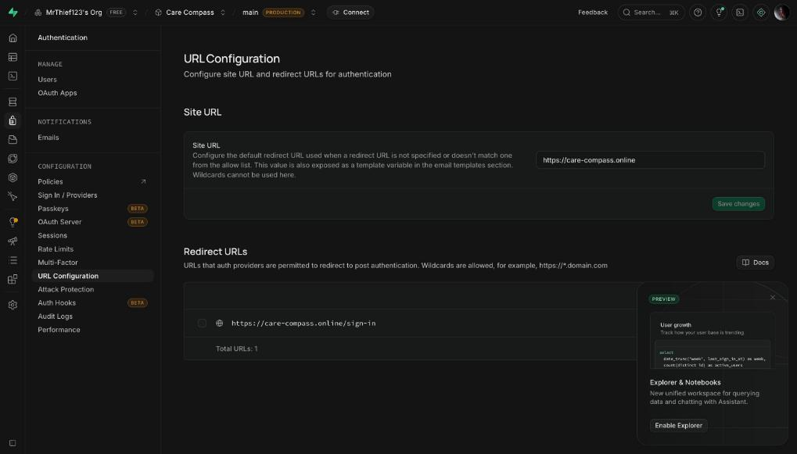
Step 10: Make the password reset email work
Supabase's standard emails do not match Care Compass, so change two of them.
- In Supabase click Authentication, then Emails, then Templates.
- Click Reset password. In Subject, type
Reset your Care Compass password. Delete everything in the large box, then copy the whole of Box A below and paste it in. Click Save. - Click Invite user. In Subject, type
You have been invited to Care Compass. Delete everything in the large box, then copy the whole of Box B below and paste it in. Click Save.
Box A (Reset password)
<h2>Reset your password</h2>
<p>We received a request to reset the password for your Care Compass account.</p>
<p>
<a href="{{ .SiteURL }}/auth/confirm?token_hash={{ .TokenHash }}&type=recovery&next=/reset-password">Choose a new password</a>
</p>
<p>
This link works once and expires. If it has expired, request a new one from the sign-in page. If
you did not ask for this, you can ignore this email.
</p>Box B (Invite user)
<h2>You have been invited to Care Compass</h2>
<p>
Your organisation has added you to Care Compass. Set a password to finish setting up your account.
</p>
<p>
<a href="{{ .SiteURL }}/auth/confirm?token_hash={{ .TokenHash }}&type=invite&next=/set-password">Set your password</a>
</p>
<p>
This link works once and expires. If it has expired, ask your administrator to send a new invite.
If you were not expecting this, you can ignore this email.
</p>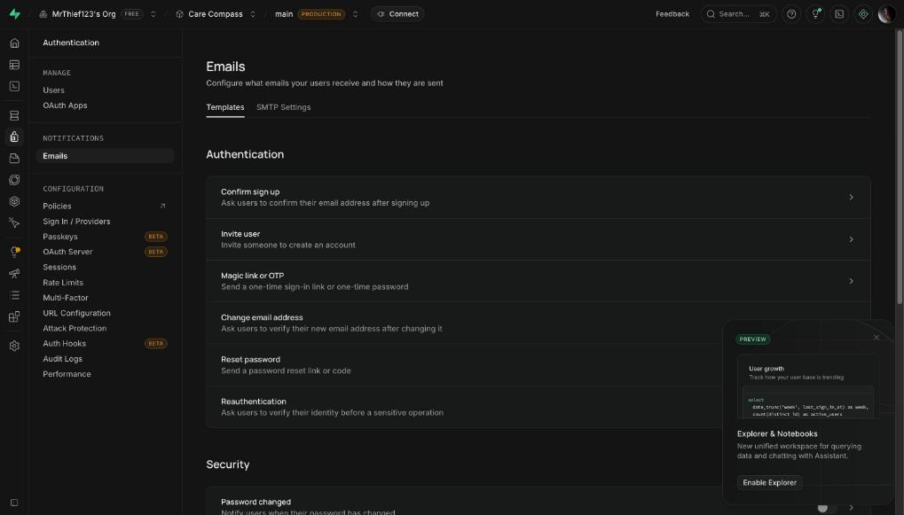
Step 11: Check it works
- Open your Vercel web address in your browser. You should see the Care Compass sign-in page.
- Click Create an account and fill in the form.
- You should land on your Home page straight away.
That is all. The how-to guides for administrators, carers and family members are in the same folder as this page.
Emails: without extra setup, Supabase sends the password-reset emails itself, but only a few per hour. This is fine for a small start. The Care Compass team keeps the notes for setting up a proper email service in the page Developer notes.
If something goes wrong
| What you see | What to do |
|---|---|
| "We couldn't create your account" when signing up | Email confirmation is still switched on. Do Step 9a again and click Save. |
The password reset link opens a page that cannot be reached, or an address starting localhost | The website address is missing in Supabase. Do Step 9b, then Step 10, and request a new reset email. |
| Migrate database shows a red cross | Read the note in Step 7. Most often a secret from Step 6 is missing or has a typing mistake. Add it again, then run it again. |
| The Table Editor in Supabase is empty | Only the safe test was run. Run Migrate database again with the box not ticked (Step 7). |
| Your website shows an error page, or never loads | In Vercel open your project, click Settings, then Environment Variables. Check all four names are spelled exactly as in Step 8 and the values were pasted whole. Then click Deployments, the three dots beside the newest one, and Redeploy. |
| Vercel does not list your copy of Care Compass | On the Import page click Adjust GitHub App Permissions and allow access to your copy. |
| You cannot find Access Tokens in Supabase | Open supabase.com/dashboard/account/tokens in your browser while signed in. |
| You lost a code | Keys can be shown again in Supabase (Step 5). The database password cannot: in Supabase open Project Settings, then Database, and reset it, then update the SUPABASE_DB_PASSWORD secret in GitHub. |
Keeping your codes safe
- Keep your codes table on paper or in a password manager. Do not email it or post it anywhere.
- The
SUPABASE_SERVICE_ROLE_KEY,SUPABASE_ACCESS_TOKENandSUPABASE_DB_PASSWORDare private. Never send them to anyone, including in a screenshot. - If you think one has leaked, tell the Care Compass team straight away. They can help you replace it.
Getting updates later
When the Care Compass team improves the program, you can bring those improvements into your copy:
- Open your copy of Care Compass on GitHub.
- Click Sync fork, then Update branch.
- Vercel notices the change and publishes the new version by itself in a few minutes.
- If the Care Compass team tells you the update includes a database change, run Migrate database again (Step 7).